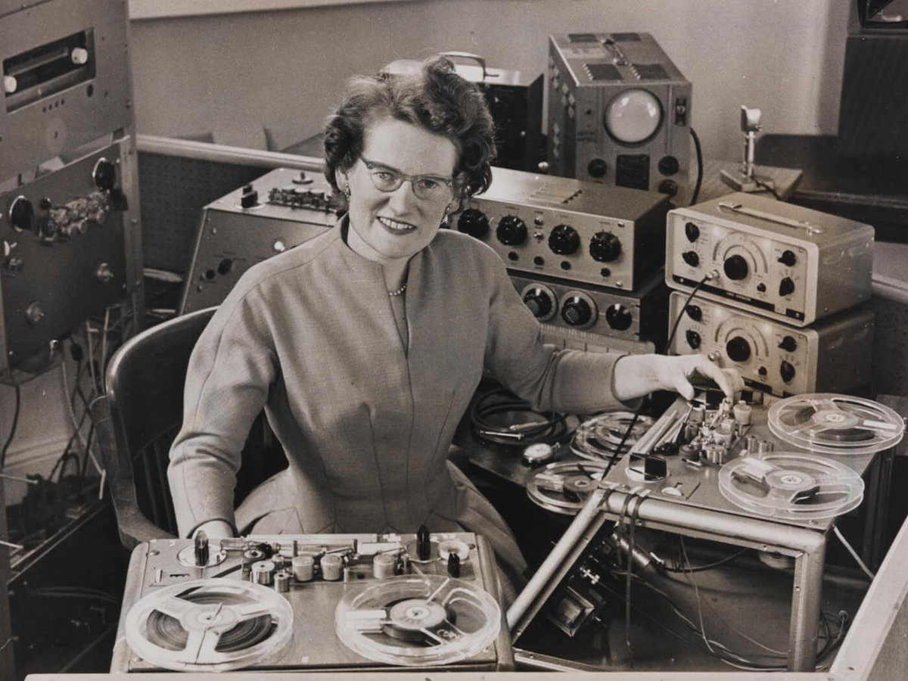
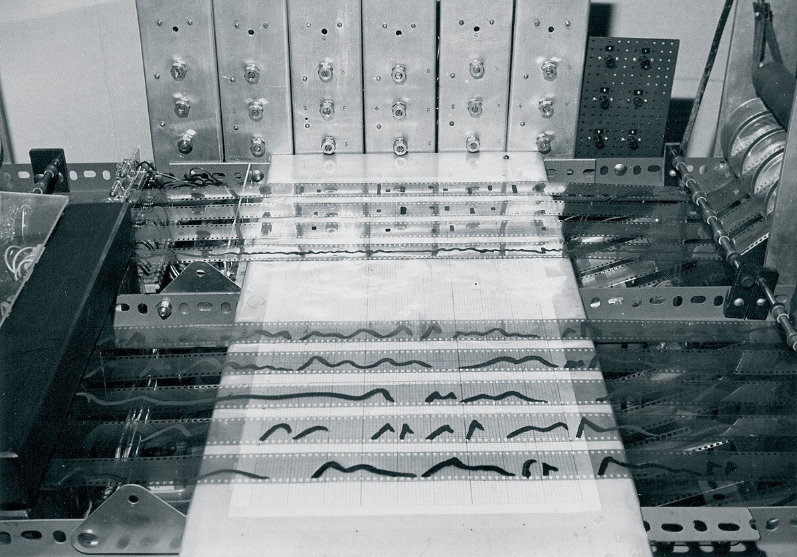
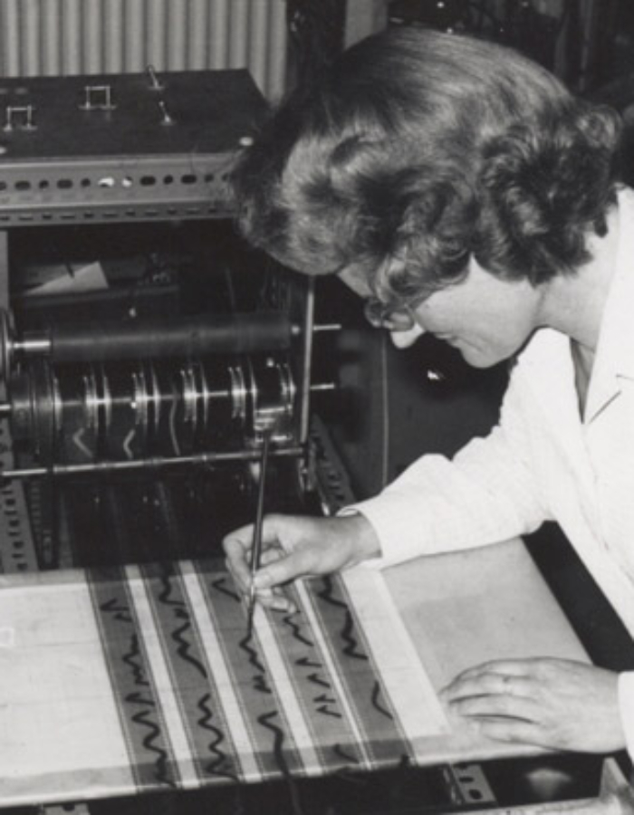
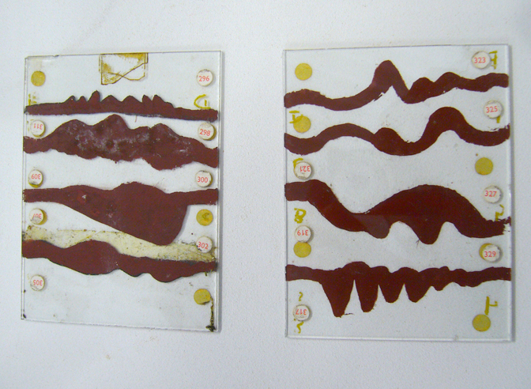

Oram built the Oramics machine in her own studio: shapes drawn by hand on 35mm film strips would scan and control pitch, duration, and timbre. Sound as drawn notation. Four Aspects was among the first pieces realised through this method.
Blobs spiral outward from the centre as the piece progresses. Each mark responds to amplitude, wider when louder and absent in silence. Organic, asymmetric, hand-drawn in character. An attempt to render the sound the way Oram rendered scores.